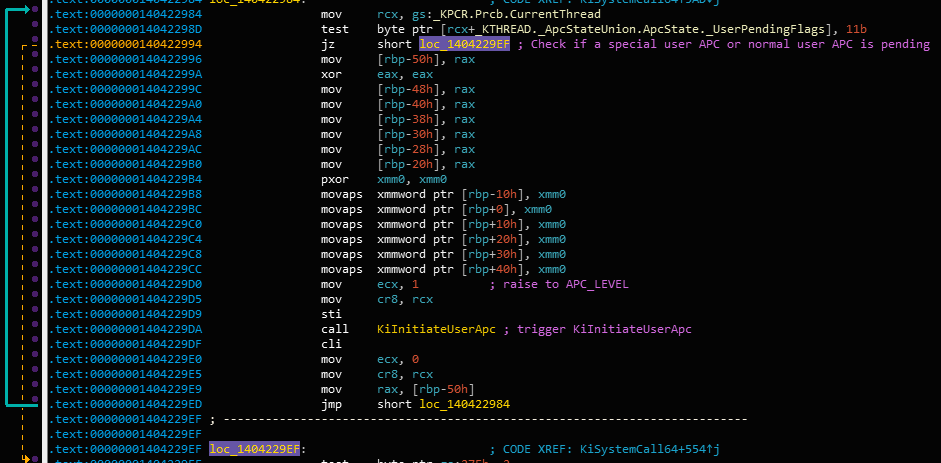

APC Series: User APC Internals
Hey! This is the second part of the APC Series, If you haven’t read it I recommend you to read the first post about User APC API. where I explore the internals of APC objects in Windows. In this part I’ll explain:
- How to queue user APCs from kernel mode?
- How user APCs are implemented in the windows kernel?
- How user APCs are delivered to user mode?
In this blog I won’t cover the internals of Special User APCs, because Special User APCs rely on Kernel APC to perform their operation - I’ll explore this type in a future post after I explain about Kernel APCs.
To explore the APC mechanism, we’ll use the APC functions directly. Read the disclamer about using APCs from a kernel driver in the previous article - this is generally not recommended in real products - avoid using APCs and other undocumented APIs unless you have no choice and in 99% of the times you do have a choice
To explain the internals of User APCs I’m going to explain the complete flow: From NtQueueApcThread to the APC routine in user mode. This post a bit more “in depth” than the last post, but I think it can be very informative for windows internals developers, researchers and enthusiasts.
NtQueueApcThread
There are 4 types of APCs:
- User APC
- Kernel APC
- Special User APC
- Special Kernel APC
All of these types are represented by the same object in kernel mode - KAPC. In this article, we’ll only discuss about the user mode APC, the usage of the API is a little different with other types of APCs. A little reminder: User APCs has many uses in the windows OS:
- Asynchronous RPC Completion Callbacks
- Asynchronous I/O Completion Callback
- Process Injection - Both Malware and security tools like Process Hacker
- Many more “async callbacks” like SetWaitableTimer.
So, to understand how user APCs work, let’s see what happens when you call NtQueueApcThread. I’ll publish the source of this function when the series end, but for now let’s see a similar implementation without some “noise” around: (Read the comments to understand what’s going on)
//
// As you can see, this function has the same arguments as NtQueueApcThread.
// This is for you to understand how it works :)
//
NTSTATUS
SimpleNtQueueApcThread(
HANDLE ThreadHandle,
PPS_APC_ROUTINE ApcRoutine,
PVOID SystemArgument1,
PVOID SystemArgument2,
PVOID SystemArgument3
)
{
NTSTATUS Status = STATUS_SUCCESS;
PKAPC Apc = NULL;
PETHREAD TargetThread = NULL;
BOOLEAN Inserted = FALSE;
//
// Obtain pointer to KTHREAD of the target thread.
// This is required to initialize the APC.
// Verify the handle has THREAD_SET_CONTEXT access.
//
Status = ObReferenceObjectByHandle(
ThreadHandle,
THREAD_SET_CONTEXT,
*PsThreadType,
UserMode,
&TargetThread,
NULL
);
if (!NT_SUCCESS(Status)) {
TargetThread = NULL;
goto Cleanup;
}
//
// Each APC object is represented by the KAPC kernel structure.
// Allocate the KAPC object which represents the APC object in the non-paged pool.
// Non-Paged is required because the APC object will be accessed in DISPATCH_LEVEL and
// page faults cannot be handled in DISPATCH_LEVEL.
//
Apc = ExAllocatePoolWithTag(NonPagedPoolNx, sizeof(KAPC), 'CPAK');
if (Apc == NULL) {
Status = STATUS_NO_MEMORY;
goto Cleanup;
}
//
// Initialize the members of the KAPC object.
// Set the ApcRoutine, and make sure ExFreePool is called to free the APC
// when the APC is removed from the APC queue - if thread terminated or the
// APC is dequeued for execution.
//
KeInitializeApc(
Apc,
TargetThread,
OriginalApcEnvironment,
(PKKERNEL_ROUTINE)ExFreePool,
(PKRUNDOWN_ROUTINE)ExFreePool,
ApcRoutine,
UserMode,
SystemArgument1
);
//
// Insert the APC into the user queue of the target thread.
// If the thread is in an alertable wait, "unwait" the thread so it can return
// to user mode to execute the APC.
//
Inserted = KeInsertQueueApc(Apc, SystemArgument2, SystemArgument3, 0);
//
// If the insertion failed (typically because target thread is in
// the middle of termination) return an error.
//
if (!Inserted) {
Status = STATUS_UNSUCCESSFUL;
ExFreePool(Apc);
goto Cleanup;
}
Status = STATUS_SUCCESS;
Cleanup:
if (TargetThread) {
//
// Don't forget to dereference the target thread because it was referenced above.
//
ObDereferenceObject(TargetThread);
}
return Status;
}See this for a fully implemented driver..
So, as you can see it’s pretty simple to queue a user APC from kernel mode. Each APC object is represented by a KAPC object. The KAPC object stores 3 important functions:
- NormalRoutine: This is the function that should execute in user mode when the APC is delivered. (the ApcRoutine)
- KernelRoutine: This is a function that executes in kernel mode in APC_LEVEL before the APC is delivered, This can have many uses, in this case we just store ExFreePool so the KAPC object will be freed before the APC will be delivered to user mode - we’ll see how we can utilize this function to build cool mechanisms in future posts.
- RundownRoutine: This is a function that executes if the thread terminates before the APC was delivered to user mode, it should free the APC object.
For user APCs, we need to specify “UserMode” in the ApcMode argument of KeInitializeApc. If you look at the code you’ll see SystemArgument1 is passed to KeInitializeApc and SystemArgument2 and SystemArgument3 are passed to KeInsertQueueApc.
KeInsertQueueApc is the important function here - it inserts the APC to the queue of the target thread and if the thread is in an alertable waiting state, it can also “unwait” the thread and make sure that when it returns to user mode the APC will execute.
Both of these functions (KiInitializeApc and KeInsertQueueApc) are exported by NTOSKRNL and are used commonly by AVs and rootkits to initialize and queue an APC to a user mode process. For example, the DoublePulsar kernel mode payload developed by the NSA uses KeInsertQueueApc to execute the payload in user mode. In a future post we’ll see how it can be used for injection :)
The KAPC structure
Let’s have a first look at the KAPC structure:
typedef struct _KAPC {
// always 0x12 (ApcObject)
UCHAR Type;
UCHAR SpareByte0;
// always the size of the structure
// (the correct size based on the architecture of the CPU)
UCHAR Size;
UCHAR SpareByte1;
ULONG SpareLong0;
PKTHREAD Thread;
LIST_ENTRY ApcListEntry;
//
// Functions
//
PKKERNEL_ROUTINE KernelRoutine;
PKRUNDOWN_ROUTINE RundownRoutine;
PKNORMAL_ROUTINE NormalRoutine;
//
// Arguments
//
PVOID NormalContext;
PVOID SystemArgument1;
PVOID SystemArgument2;
CCHAR ApcStateIndex;
KPROCESSOR_MODE ApcMode;
BOOLEAN Inserted;
} KAPC, *PKAPC;A simple explanation of the members, based on the values that arrive from user mode.
- Type & Size: Constant values that have to be there for kernel layer objects.
- Thread: The target thread kernel object.
- ApcListEntry: a LIST_ENTRY structure that allows the kernel to store this APC in the target queue.
- Function Pointers: pointer to the functions that were explained above.
- NormalContext: the value of the user parameter - SystemArgument1.
- SystemArgument1 - It contains the value of the user parameter - SystemArgument2.
- SystemArgument2 - It contains the value of the user parameter - SystemArgument3.
- Inserted: A boolean flag that tells if the APC was already inserted or not.
- ApcStateIndex: Will be explained in a future post.
The names of arguments are a little confusing, since SystemArgument2 from user mode is not the SystemArgument2 in this structure.. but you can handle it :)
KeInsertQueueApc
Let’s dig deeper to understand what’s happens inside KeInsertQueueApc:
BOOLEAN
KeInsertQueueApc(
IN PKAPC Apc,
IN PVOID SystemArgument1,
IN PVOID SystemArgument2,
IN KPRIORITY Increment
)
// ...
// ... Removed some code..
// ...
KIRQL OldIrql;
//
// Each operation that touches the APC queue requires to hold the ThreadLock SpinLock.
// This inlined function call also raises the IRQL to DISPATCH_LEVEL, this is required to hold
// a spinlock.
//
KiAcquireThreadLockRaiseToDpc(TargetThread, &OldIrql); // inlined call
//
// Capture the current processor block for later.
// The current processor cannot change because we're running code at DISPATCH_LEVEL
//
Prcb = KeGetCurrentPrcb();
//
// The ApcQueueable flag is used when the thread exits, to prevent threads from queueing APCs to this thread in the middle
// of termination. Also, an APC object can exist inside the queue only once, that's why the Inserted flag exists.
//
if (TargetThread->ApcQueueable && Apc->Inserted == FALSE) {
Apc->Inserted = TRUE;
Apc->SystemArgument1 = SystemArgument1;
Apc->SystemArgument2 = SystemArgument2;
KiInsertQueueApc(Apc);
KiSignalThreadForApc(Prcb, Apc, OldIrql);
IsInserted = TRUE;
} else {
IsInserted = FALSE;
}
//
// Stay at DISPATCH_LEVEL, for the call to KiExitDispatcher..
//
KiReleaseThreadLockSafe(TargetThread);
//
// This function lowers back to the old IRQL level.
// it may also switch the thread context to a different thread..
// maybe even the thread that we queued the APC to.
// This call has to happen because the scheduler has to evaluate which thread should run, now that
// we queued an APC to a thread that may have higher priority.
//
KiExitDispatcher(Prcb, 0, 1, Increment, OldIrql);
// ...
// ... Send an ETW alert.. We'll look at it in a future post.
// ...
return Inserted;
}Ok so this is the core operations of queuing an APC, let’s break them down to small parts:
Acquiring the thread lock
The KTHREAD data structure has a member called “ThreadLock”. This is a spin lock used by the windows kernel when important atomic operations has to be performed on this thread. This lock has to be a spin lock (and not some other synchronization object like ERESOURCE) because it is accessed both in PASSIVE_LEVEL and in DISPATCH_LEVEL. A deeper explanation about this issue can be found in my previous post about Dumping DPC Queues, where I needed to access the DPC Queue without causing any issue. Anyway, To manipulate the user APC queue, KeInsertQueueApc acquires the ThreadLock.
KiInsertQueueApc
After we acquired the lock (and performed some validations like verifying the ‘ApcQueueable’ and the ‘Inserted’ flags) We can insert the APC into the APC queue. The APC queue is actually a linked list, that is saved in the ApcState member of the KTHREAD object. (There’s another case that is related to attached threads, we’ll explain this in a future post):
typedef struct _KTHREAD {
....
....
....
KAPC_STATE ApcState;
....
....
} KTHREAD, *PKTHREAD;
struct _KAPC_STATE
{
//
// Indexed by KPROCESSOR_MODE:
// - First list head for KernelMode
// - Second list head for UserMode
//
LIST_ENTRY ApcListHead[2];
PEPROCESS Process;
//
// Kernel Mode Progress Flags.
//
union
{
UCHAR InProgressFlags;
struct
{
UCHAR KernelApcInProgress : 1;
UCHAR SpecialApcInProgress : 1;
};
};
UCHAR KernelApcPending;
//
// User mode APC pending.
//
union
{
UCHAR UserApcPendingAll;
struct
{
UCHAR SpecialUserApcPending : 1;
UCHAR UserApcPending : 1;
};
};
} KAPC_STATE, *PKAPC_STATE; Right now, the relevant member for us is the “ApcListHead” member. This is an array of 2 list heads: One for the kernel APC queue and the other one for the user APC queue. The same queues store both Special and Normal APCs. To insert the APC into the queue, the code performs the following:
VOID
KiInsertQueueApc(
PKAPC Apc
)
{
// ....
// .... This function is different for kernel APCs, special kernel APCs and special user APCs.
// .... In this article we only discuss user APCs - for user APCs the function is pretty simple.
// .... The 'TargetApcState' is the ApcState member from the KTHREAD object, unless the thread is attached -
// .... this will be explained in a future post.
// ....
InsertTailList(&TargetApcState->ApcListHead[UserMode], &Apc->ApcListEntry);
}Pretty simple right?
Ok, to understand what’s happenning inside KiSignalThreadForApc and KiExitDispatcher, let’s explore a bit how the APC is going to be delivered to user mode.
User Mode APC Delivery
Ok, now after the APC is in the target user APC queue, How is it delivered to user mode?
The flow is not so easy to explain because the flow is not “linear” - it involves many functions that execute at different triggers. I’ll first give a simple summary of this flow, then we’ll dive deeper.
Each time a thread returns to user mode after a system call (+ more specific situations we’ll see soon) a per-thread flag called “UserApcPendingAll” is checked. The purpose of this flag is to determine if the pending user APCs of this thread should be delivered. If this flag is not 0, The pending APCs are executed in user mode, one after another. UserApcPendingAll contains 2 bits: 1 for special user APCs and another for normal user APCs. This flag is stored in the KAPC_STATE structure we saw above, right next to the user mode APC list.
So, when is this flag set? Simple -
- Alertable Wait Call: When an alertable wait begins and the APC queue is not empty (because APCs that were queued when the thread was running)
- KiSignalThreadForApc: When a User APC is queued and the target thread is in an alertable state at the moment the APC is queued. The thread is awakened to execute the APC.
- If NtTestAlert (and internally, KeTestAlertThread) is called + the thread is not “alerted” + the user APCs queue is not empty.
- More edge cases we’ll cover in future posts.
After this flag is set, In specific triggers (Mostly returning to user mode after a system call) a function called KiDeliverApc is called. This function handles both kernel and user APCs, but for user APCs it makes sure that when the thread returns to user mode, it will return to the APC instead of the original instruction that was executed in user mode - most commonly the syscall stub. We’ll look soon how it does this.
Ok, So I hope you get the big picture of this flow - let’s dive into the details of each case.
Entering Alertable State
We saw in the previous post that to execute an APC, we can call NtWaitForSingleObject with Alertable = TRUE. Let’s explore how the call to NtWaitForSingleObject causes the APC to be executed.
Let’s say the thread waits using NtWaitForSingleObject. In kernel mode, a thread can wait using the KeWaitForSingleObject routine, let’s see a simpler implementation of NtWaitForSingleObject:
//
// Kernel mode.
//
// A simpler implementation of NtWaitForSingleObject for event objects.
// This is used to demostrate how user APCs execute.
//
// Imagine a user mode caller called this function through NtDeviceIoControlFile.
//
//
NTSTATUS
SimpleNtWaitForSingleObject(
HANDLE EventHandle,
BOOLEAN Alertable,
PLARGE_INTEGER Timeout
)
{
PKEVENT UserEvent = NULL;
NTSTATUS Status;
//
// Obtain the pointer to the event object and check SYNCHRONIZE access.
//
Status = ObReferenceObjectByHandle(
Object,
SYNCHRONIZE,
*ExEventObjectType,
UserMode,
&UserEvent,
NULL
);
if (!NT_SUCCESS(Status)) {
goto Cleanup;
}
//
// Simply forward the parameters to KeWaitForSingleObject which performs the operation.
//
Status = KeWaitForSingleObject(
UserEvent,
UserRequest,
UserMode,
Alertable,
Timeout
);
Cleanup:
if (UserEvent) {
ObDereferenceObject(UserEvent);
}
return Status;
}This is the signature of KeWaitForSingleObject:
NTSTATUS
KeWaitForSingleObject (
PVOID Object,
KWAIT_REASON WaitReason,
KPROCESSOR_MODE WaitMode,
BOOLEAN Alertable,
PLARGE_INTEGER Timeout
);KeWaitForSingleObject can return with the following status codes:
- STATUS_SUCCESS: The object was signaled - for example, this happens if KeSetEvent is called.
- STATUS_TIMEOUT: The timeout specified in the ‘Timeout’ argument is over.
- STATUS_USER_APC: The wait was interrupted because an APC needs to execute in user mode - the kernel needs to return to user mode to execute the APC.
- STATUS_ALERTED: An alert was sent to the calling thread. (We will discuss alerts in a future post)
So, in case a user APC should be executed STATUS_USER_APC is returned - even if the object was not signaled and the timeout was not over!
There are 2 parameters that are important for user APCs:
- WaitMode: If this parameter is KernelMode, it means user APCs won’t be executed. This parameter is set to ‘UserMode’ typically when user mode code initiated the wait, for example when NtWaitForSingleObject is called, or any other wait function from user mode.
- Alertable: This flag specifies whether the wait is alertable. If a thread is alertable, the wait can be interrupted with STATUS_USER_APC.
So to summarize NtWaitForSingleObject calls KeWaitForSingleObject. In case Alertable = TRUE and WaitMode = UserMode, the call may return with STATUS_USER_APC. If KeWaitForSingleObject is returned with STATUS_USER_APC, it means the APC queue is not empty. It can happen if an APC was queued before KeWaitForSingleObject is called or after.
Before STATUS_USER_APC is returned, KeWaitForSingleObject set ‘UserApcPending’ to TRUE - As I said above, ‘UserApcPending’ triggers a call to KiDeliverApc before the thread returns to user mode.
Let’s see a live example of this flow, look at this user mode program:
VOID
ApcCode(
ULONG_PTR dwData
)
{
UNREFERENCED_PARAMETER(dwData);
printf("Hello from APC!\n");
}
int main(
int argc,
const char** argv
)
{
UNREFERENCED_PARAMETER(argc);
UNREFERENCED_PARAMETER(argv);
HANDLE EventHandle;
NTSTATUS Status;
printf("Queueing APC..\n");
QueueUserAPC(ApcCode, GetCurrentThread(), 0);
EventHandle = CreateEvent(NULL, FALSE, FALSE, NULL);
printf("Waiting for event...\n");
Status = NtWaitForSingleObject(EventHandle, TRUE, NULL);
printf("Status = 0x%08X\n", Status);
return 0;
}First, the code queues and APC to the current thread using QueueUserAPC - As we know, the APC should not be executed until the thread enters alertable state. After that, the thread creates an event object and waits on the event object. The wait is done using NtWaitForSingleObject and Alertable = TRUE. You may think that this code waits forever because the event is never signaled, but that turns out to be wrong - this is the output:
Queueing APC..
Waiting for event...
Hello from APC!
Status = 0x000000C00x000000C0 is STATUS_USER_APC. Let’s debug to understand what happened here:
QueueUserAPC
The call to QueueUserAPC triggers the following function:
00 nt!KiInsertQueueApc
01 nt!KeInsertQueueApc
02 nt!NtQueueApcThreadEx2
03 nt!KiSystemServiceCopyEnd
04 ntdll!NtQueueApcThreadEx2
05 KERNELBASE!QueueUserAPC2
06 AlertableStateApcPending!mainwhich, as we saw above, inserts the APC into the queue of this thread. Let’s monitor 2 important kernel memory locations: UserApcPending and the ApcListHead.
Before the APC is queued, we can see the user APC list is empty (because Flink and Blink points to the head) and UserApcPending = FALSE:
kd> dx @$curthread.KernelObject.Tcb.ApcState.UserApcPending
@$curthread.KernelObject.Tcb.ApcState.UserApcPending : 0x0 [Type: unsigned char]
kd> dx &@$curthread.KernelObject.Tcb.ApcState.ApcListHead[1] : 0xffffcc0371d0b128 [Type: _LIST_ENTRY *]
[+0x000] Flink : 0xffffcc0371d0b128 [Type: _LIST_ENTRY *]
[+0x008] Blink : 0xffffcc0371d0b128 [Type: _LIST_ENTRY *]After the QueueUserAPC2 function returns, we can see the state changed:
kd> dx @$curthread.KernelObject.Tcb.ApcState.UserApcPending
@$curthread.KernelObject.Tcb.ApcState.UserApcPending : 0x0 [Type: unsigned char]
kd> dx &@$curthread.KernelObject.Tcb.ApcState.ApcListHead[1]
&@$curthread.KernelObject.Tcb.ApcState.ApcListHead[1] : 0xffffcc0371d0b128 [Type: _LIST_ENTRY *]
[+0x000] Flink : 0xffffcc037a8d6310 [Type: _LIST_ENTRY *]
[+0x008] Blink : 0xffffcc037a8d6310 [Type: _LIST_ENTRY *]As we can see, UserApcPending is still FALSE but the APC queue has 1 item:
kd> dx Debugger.Utility.Collections.FromListEntry(@$curthread.KernelObject.Tcb.ApcState.ApcListHead[1], "nt!_KAPC", "ApcListEntry")
Debugger.Utility.Collections.FromListEntry(@$curthread.KernelObject.Tcb.ApcState.ApcListHead[1], "nt!_KAPC", "ApcListEntry")
[0x0] [Type: _KAPC]NtWaitForSingleObject
After QueueUserAPC, NtWaitForSingleObject is called:
00 nt!KeWaitForSingleObject
01 nt!ObWaitForSingleObject+0x91
02 nt!NtWaitForSingleObject+0x6a
03 nt!KiSystemServiceCopyEnd+0x25
04 ntdll!NtWaitForSingleObject+0x14
05 AlertableStateApcPending!main+0x8cThe KeWaitForSingleObject functions checks the APC queue. If WaitMode == UserMode && Alertable && User APC queue is not empty, it does the following:
- UserApcPending = TRUE
- return STATUS_USER_APC
So as expected, after this function is called, this is the state:
kd> dx @$curthread.KernelObject.Tcb.ApcState.UserApcPending
@$curthread.KernelObject.Tcb.ApcState.UserApcPending : 0x1 [Type: unsigned char]
kd> dx Debugger.Utility.Collections.FromListEntry(@$curthread.KernelObject.Tcb.ApcState.ApcListHead[1], "nt!_KAPC", "ApcListEntry")
Debugger.Utility.Collections.FromListEntry(@$curthread.KernelObject.Tcb.ApcState.ApcListHead[1], "nt!_KAPC", "ApcListEntry")
[0x0] [Type: _KAPC]The APC is still in the queue, but now ‘UserApcPending’ is TRUE. Now, before the thread returns to user mode, KiSystemServiceExit checks if “UserApcPending” or “SpecialUserApcPending” is TRUE. If one of these flags is TRUE, it calls KiInitiateUserApc:

KiInitiateUserApc saved the current state and calls KiDeliverApc which handles the delivery to user mode.
If you wonder when KiInitiateUserApc can be triggered, look at the references to KiInitiateUserApc:

As you can see there are many flows that can lead to trigger the UserApcPending check and KiInitiateUserApc.
Currently, This is the callstack:
00 nt!KiDeliverApc
01 nt!KiInitiateUserApc+0x70
02 nt!KiSystemServiceExit+0x9f
03 ntdll!NtWaitForSingleObject+0x14
04 AlertableStateApcPending!main+0x8cKiDeliverApc handles all types of APCs so it’s a pretty complicated function. But let’s look the main functionality that is related to user APCs (I removed large amount of code to focus on user mode APCs)
VOID
KiDeliverApc(
KPROCESSOR_MODE PreviousMode,
PKEXCEPTION_FRAME ExceptionFrame,
PKTRAP_FRAME TrapFrame
)
...
...
...
...
{
if (PreviousMode == UserMode && !IsListEmpty(&CurrentThread->ApcState.ApcListHead[UserMode])) {
//
// UserMode APCs are handled only if the PreviousMode is UserMode.
//
KiAcquireThreadLockRaiseToDpc(CurrentThread);
//
// Mark UserApcPending = FALSE - to notify KiDeliverApc handled the user APC.
//
CurrentThread->ApcState.UserApcPending = FALSE;
//
// Check this condition again, now that we acquired the lock.
//
if (IsListEmpty(&CurrentThread->ApcState.ApcListHead[UserMode])) {
KiReleaseThreadLock(CurrentThread);
KeLowerIrql(APC_LEVEL);
goto Exit;
}
//
// Get the first APC from the queue.
//
PKAPC CurrentApc = CONTAINING_RECORD(CurrentThread->ApcState.ApcListHead[UserMode].Flink, KAPC, ApcListEntry);
//
// Initialize local variables because the "CurrentApc" will be freed soon.
//
KernelRoutine = CurrentApc->KernelRoutine;
NormalRoutine = CurrentApc->NormalRoutine;
NormalContext = CurrentApc->NormalContext;
SystemArgument1 = CurrentApc->SystemArgument1;
SystemArgument2 = CurrentApc->SystemArgument2;
//
// Remove the KAPC object from the queue.
//
RemoveEntryList(&CurrentApc->ApcListEntry);
//
// Mark that the Inserted = FALSE so the APC could be inserted again.
//
CurrentApc->Inserted = FALSE;
//
// Release the thread lock and call the Kernel Routine at APC_LEVEL.
// There's no "in progress" flag that is turned on in this case...
//
KiReleaseThreadLock();
KeLowerIrql(APC_LEVEL);
//
// The code here transfers the ownership over the CurrentApc object to the KernelRoutine - The kernel routine
// most commonly frees the APC, so we better not touch it again. To overcome this, local variables that contains
// the contents of the KAPC object are created. These values can change inside the KernelRoutine.
//
KernelRoutine(
CurrentApc,
&NormalRoutine,
&NormalContext,
&SystemArgument1,
&SystemArgument2
);
//
// Modify the TRAP_FRAME to return to KiUserApcDispatcher
//
KiInitializeUserApc(
ExceptionFrame,
TrapFrame,
NormalRoutine,
NormalContext,
SystemArgument1,
SystemArgument2,
...
...
);
}
} Ok so the important steps taken here are:
- Acquire the APC queue lock.
- Check if the APC queue is empty or not. If it’s not, pop the first user APC from the queue
- Call KernelRoutine. The KernelRoutine is code that runs at APC_LEVEL before the APC is delivered to user mode. Most commonly, this code frees the APC (ExFreePool). The values of the APC are saved in local variables, and the KernelRoutine can change the values if it wants to.
- Initialize the TRAP_FRAME to return to the APC code instead of the existing code.
This is how the APC is delivered to user mode! Let’s explore a bit what is the trap frame:
Changing the Trap Frame
The KTRAP_FRAME is a structure that is initialized when an interrupt occurs or a thread enters kernel mode. It contains the values of registers when the trap occured (Similar to _CONTEXT that is used by Get/SetThreadContext). A pointer to the KTRAP_FRAME can be found in KTHREAD->TrapFrame. Each time a thread returns to user mode, it reads the context from the trap frame and transfers execution to user mode using this context. By the way, this structure is changed when SetThreadContext is called as we’ll see in a future post.
So, before the APC delivery happens, the trap frame contains the following RIP value:
kd> dx @$curthread.KernelObject.Tcb.TrapFrame->Rip
@$curthread.KernelObject.Tcb.TrapFrame->Rip : 0x7ffdd90b3bf4 [Type: unsigned __int64]
kd> u 0x7ffdd90b3bf4
ntdll!NtWaitForSingleObject+0x14:
00007ffd`d90b3bf4 c3 retAs we can see here, the value of RIP points to the NtWaitForSingleObject system call stub. This looks fine because we entered the kernel through NtWaitForSingleObject.
When KiInitializeUserApc is called, it needs to transfer execution to the user mode APC somehow. The entry point of APCs in user mode is ntdll!KiUserApcDispatcher - This function reads the parameters from the stack and executes the normal routine specified by KeInitializeApc. We will inspect KiUserApcDispatcher in a future post, but here I wanted to show how it changes the KTRAP_FRAME. After KiInitializeUserApc is executed, this is the value of the RIP:
kd> dx @$curthread.KernelObject.Tcb.TrapFrame->Rip
@$curthread.KernelObject.Tcb.TrapFrame->Rip : 0x7fff2a2b78a0 [Type: unsigned __int64]
kd> u 0x7fff2a2b78a0
ntdll!KiUserApcDispatch:
00007fff`2a2b78a0 488b4c2418 mov rcx,qword ptr [rsp+18h]
00007fff`2a2b78a5 488bc1 mov rax,rcx
00007fff`2a2b78a8 4c8bcc mov r9,rsp
00007fff`2a2b78ab 48c1f902 sar rcx,2
00007fff`2a2b78af 488b542408 mov rdx,qword ptr [rsp+8]
00007fff`2a2b78b4 48f7d9 neg rcx
00007fff`2a2b78b7 4c8b442410 mov r8,qword ptr [rsp+10h]
00007fff`2a2b78bc 480fa4c920 shld rcx,rcx,20hAlso, we can see the callstack now:
00 nt!KiSystemServiceExit
01 ntdll!KiUserApcDispatcher
02 ntdll!NtWaitForSingleObject
03 AlertableStateApcPending!mainAs you can see, KiUserApcDispatcher is now shown on the stack, this is because the trap frame pointes there. Also, the stack that is used while executing the APC is the same stack as the current user mode thread - the previous context that was executed (NtWaitForSingleObject in user mode) is pushed to the stack and it’s restored after the APC is done running. A bit after the Thread->TrapFrame is changed, KiSystemServiceExit reads the value of RIP from the trap frame and invokes the “sysret” instruction to return to user mode.
KiSignalThreadForApc: Unwaiting Alertable Threads
Ok the second case we are going to explore is this: The target thread is inside an alertable wait and we called KeInsertQueueApc.
As we saw earlier, to queue an APC we have to call KeInsertQueueApc. After KeInsertQueueApc inserts the APC into the target queue, KiSignalThreadForApc runs. The purpose of this function is to check whether the target thread should be signaled and how exactly, depending on the type of the APC. Let’s explore the implementation of this function for user mode APCs.
VOID
KiSignalThreadForApc(
PKPRCB Prcb,
PKAPC Apc,
KIRQL CallerIRQL
)
//
// The function is called at DISPATCH_LEVEL.
//
// ..
// ..
// ..
//
if (Apc->Thread == KeGetCurrentThread() && Apc->ApcMode == UserMode) {
//
// The APC is targeted to the queueing thread. The target APC is obviously not alertable
// because it's running - so this function doesn't do anything, the APC is waiting in the
// queue until the thread will enter an alertable wait.
//
return;
}
//
// ... Kernel mode APC handler.. we skip this for now.
//
//
// Handle user APC to a different thread.
//
if (
//
// The thread is waiting
//
Thread->State == Waiting &&
//
// When a wait function is called (Like KeWaitForSingleObject) a WaitMode is passed,
// This helps to decide if a user APC should interfere with the wait or not.
// If WaitMode == KernelMode, the thread won't be signaled.
//
Thread->WaitMode == UserMode &&
//
// Verify the thread is not suspended
//
Thread->WaitRegister.State != WaitSuspended &&
Thread->WaitRegister.State != WaitSuspendInProgress &&
//
// The thread has to be in an alertable state, OR the UserApcPending is already TRUE.
// UserApcPending is the bit inside UserApcPendingAll - this bit is not turned on for special user APCs.
//
(Thread->Alertable || Thread->ApcState.UserApcPending)
) {
// If the conditions are met, "unwait" the thread and
// return STATUS_USER_APC to the caller of the wait function (like KeWaitForSingleObject)
// and continue from the flow we saw above.
//
Thread->WaitRegister.UserApc = TRUE;
if (KiSignalThread(Prcb, Thread, STATUS_USER_APC, 0)){
//
// There is no race condition here: The thread is signaled to execute in the processor
// specified in 'Prcb' (the current processor) - because the IRQL is DISPATCH_LEVEL, the scheduler
// won't be triggered (yet) and the current thread will remain - until KiExitDispatcher is called.
//
Thread->ApcState.UserApcPending = TRUE;
}
}Ok, so let’s summarize the conditions that KiSignalThreadForApc checks before it signals the target thread:
- The thread is waiting.
- The thread is not suspended - when a thread is suspended it’s in the “Waiting” state - the kernel does not want to want to unwait suspended threads to execute an APC.
- The thread is alertable - the “Alertable” member turns TRUE when the thread calls KeWaitForSingleObject with Alertable = TRUE.
The function KiSignalThread changes the state of the thread: From the “Wait” state the thread changes to the “DeferredReady” - the thread will execute on the same CPU - it will continue inside KeWaitForSingleObject and return STATUS_USER_APC to it’s caller. After STATUS_USER_APC is returned, the flow continues just like above.
NtTestAlert
Lastly, let’s see how NtTestAlert can be used to execute the pending APCs:
typedef
NTSTATUS
(*PNT_TEST_ALERT)(
VOID
);
VOID
ApcCode(
ULONG_PTR dwData
)
{
printf("Hello from APC!\n");
}
int main(
int argc,
const char** argv
)
{
HMODULE hNtdll = GetModuleHandle("ntdll.dll");
PNT_TEST_ALERT NtTestAlert = (PNT_TEST_ALERT)(GetProcAddress(hNtdll, "NtTestAlert"));
printf("Queueing APC..\n");
QueueUserAPC(ApcCode, GetCurrentThread(), 0);
printf("Calling NtTestAlert...\n");
NtTestAlert();
printf("After NtTestAlert..\n");
return 0;
}So, this is the output:
Queueing APC..
Calling NtTestAlert...
Hello from APC!
After NtTestAlert..NtTestAlert is a very simple function so I hope you’ll be able to understand why APCs execute when NtTestAlert is called:
NTSTATUS
NtTestAlert(
VOID
)
{
//
// Call KeTestAlertThread with the previous mode of the current thread.
//
BOOLEAN Alerted = KeTestAlertThread(KeGetCurrentThread()->PreviousMode);
if (Alerted) {
return STATUS_ALERTED;
} else {
return STATUS_SUCCESS;
}
}
BOOLEAN
KeTestAlertThread(
KPROCESSOR_MODE Mode
)
/*
This function checks if there is a pending alert for this thread. If there is, it returns
STATUS_ALERTED. If not, it returns STATUS_SUCCESS and attempts to execute all of the pending APCs
of this thread.
*/
{
PKTHREAD CurrentThread = KeGetCurrentThread();
BOOLEAN Alerted;
KIRQL OldIrql;
KiAcquireThreadLockRaiseToDpc(CurrentThread, &OldIrql);
//
// "Alerted" has two boolean items: one for kernel and one for user.
//
Alerted = CurrentThread->Alerted[Mode];
if (Alerted) {
CurrentThread->Alerted[Mode] = FALSE;
} else if (Mode == UserMode && !ListIsEmpty(CurrentThread->ApcState.ApcListHead[UserMode])) {
CurrentThread->ApcState.UserApcPending = TRUE;
}
KeReleaseSpinLockForDpc(&CurrentThread->ThreadLock, OldIrql);
return Alerted;
} The alerts mechanism is another undocumented mechanism used in Windows to implement some of the synchronization objects for user mode. Anyway, NtTestAlert can be used to clear any alerts the current thread may have. If the current thread does not have an alert pending, this function checks if it was called for user mode and the APC queue is not empty. If that’s the case, it turns on ‘UserApcPending’ which will trigger KiDeliverApc before returning to user mode, the flow above :)
The initial NtTestAlert is abused by AVs and rootkits to inject code into new threads, a both from user mode and from kernel mode, as we saw in the previous post.
Summary
To summarize:
- User APCs are used to implement async callbacks in windows.
- User APCs are queued in kernel mode using KeInsertQueueApc.
- User APCs are saved as KAPC objects in a per-thread queue.
- User APCs are most commonly executed before a thread returns to user mode and UserApcPending = TRUE.
- UserApcPending is TRUE when KeWaitForSingleObject is called with Alertable = TRUE or when NtTestAlert is called.
Well, If you read all the post I’m proud of you (and myself, haha). I tried to write it so it will be easy to understand - I hope you got it. I’m available for any questions you have in this topic, any other Windows Internals stuff. The next post we’ll dive more into APC! stay tuned.
Kernel APC API Reference
Ok so let’s look at the Apc API:
//
// KeInitializeApc:
//
// This function initializes the members of the KAPC object.
//
// Apc: The pointer to the APC object that was allocated in a non-paged area.
//
// Thread: The pointer to the target thread object.
//
// Environment: Not relevant to user APCs - OriginalApcEnvironment.
//
// RundownRoutine: A function that should free the APC. This function will run in case
// the thread terminates and the APC did not execute.
//
// KernelRoutine: A function that executes at APC_LEVEL before the user APC is delivered to
// the user mode thread. This function should free the APC.
//
// NormalRoutine: A pointer to the APC routine in user mode.
//
// ApcMode: The mode of the APC. For user mode APCs, set to UserMode.
//
// NormalContext: A parameter that is passed as the first argument of the NormalRoutine.
//
VOID
KeInitializeApc(
IN PKAPC Apc,
IN PKTHREAD Thread,
IN KAPC_ENVIRONMENT Environment,
IN PKKERNEL_ROUTINE KernelRoutine,
IN PKRUNDOWN_ROUTINE RundownRoutine OPTIONAL,
IN PKNORMAL_ROUTINE NormalRoutine OPTIONAL,
IN KPROCESSOR_MODE ApcMode OPTIONAL,
IN PVOID NormalContext OPTIONAL
);
//
// KeInsertQueueApc:
//
// Apc: The pointer to the APC object that was initialized using KeInitializeApc.
//
// SystemArgument1: This is the second argument of the APC routine in user mode.
//
// SystemArgument2: This is the third argument of the APC routine in user mode.
//
// Increment: Optional priority increment that is given to the thread in case the thread is signaled.
//
//
BOOLEAN
KeInsertQueueApc(
IN PKAPC Apc,
IN PVOID SystemArgument1,
IN PVOID SystemArgument2,
IN KPRIORITY Increment
);